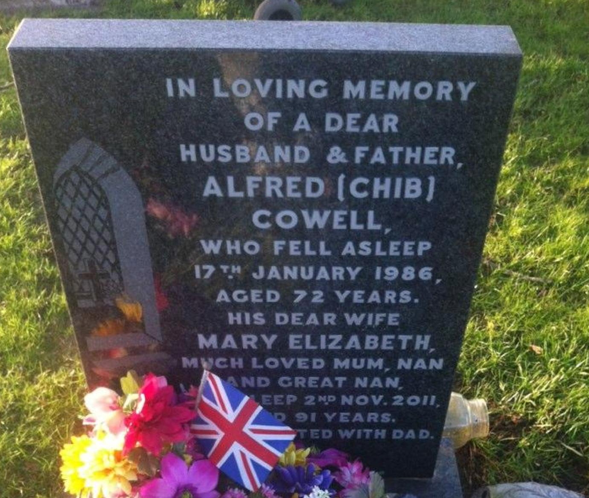
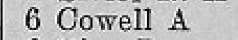

Mary Elizabeth Cowell (née Williams) cAug 1920 - 2011
[ Home ] | [ Calendar ] | [ Surnames Index ] | [ Family History ]Mary Williams, the wife of Alfred Cowell (the first cousin once-removed on the mother's side of Nigel Horne), was born in Thanet, Kent, England <i>c.</i> Aug 1920<span class="citation">1</span>. She married Alfred (an agricultural laborer with whom she had 2 surviving children <a href="I771.html">Nina J</a> and <a href="I772.html">Richard</a>) in Thanet around Feb 1951<span class="citation">3</span>. In 1965, she lived on 6 Edgar Road, Minster in Thanet<span class="citation">4</span>. <p>She died on Nov 2, 2011<span class="citation">2</span> and was buried on Minster Cemetery, Tothill Street, Minster in Thanet in Nov 2011.
Citations
- England & Wales births 1837-2006 - Findmypast
- England Billion Graves cemetery index - Findmypast
- England & Wales, Marriage Index: 1916-2005 Online publication - Provo, UT, USA: The Generations Network, Inc., 2009.Original data - General Register Office. England and Wales Civil Registration Indexes. London, England: General Register Office. © Crown copyright. Published by permission of the Cont
- 1965 Kelly's Thanet Directory
Media
Alfred Cowell - Mary Elizabeth Williams - headstone

1965 Kelly's Thanet Directory

England & Wales marriages 1837-2008 - BMD/M/1951/1/AZ/000332/130
England & Wales marriages 1837-2008 - BMD/M/1951/1/AZ/001794/009
England & Wales births 1837-2006 - BMD/B/1920/3/AZ/001769/105
England Billion Graves cemetery index - US/BMD/BILLION/009318672
Family Tree

Generated by Ged2Site. Last updated on Jul 20, 2025